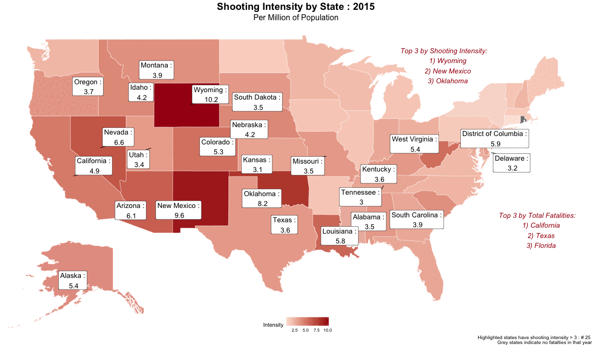
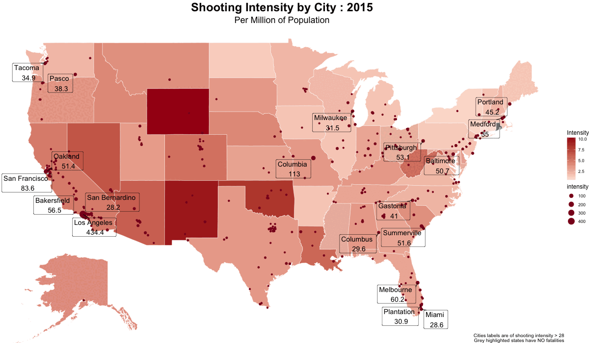

# Load in the datasets
fatality <- read.csv("data/PoliceKillingsUS.csv", na.strings = "")
median_income <- read.csv("data/MedianHouseholdIncome2015.csv")
poverty_perc <- read.csv("data/PercentagePeopleBelowPovertyLevel.csv")
hs_perc <- read.csv("data/PercentOver25CompletedHighSchool.csv")
race_perc <- read.csv("data/ShareRaceByCity.csv")
city_pop <- read.csv("data/us-cities-top-1k-multi-year.csv")
state_pop <- read.csv("data/Population_Estimate_data_Statewise_2010-2023.csv")Analysis and Visualization of Police Shootings in the United States
INFO 526 - Final Project
This project aims to comprehensively analyze fatal police shootings in the United States, delving into the underlying factors and motivations driving these tragic events.
# Recode Fatality NA
fatality <- fatality |>
mutate(
race = case_when(
race %in% "A" ~ "Asian",
race %in% "B" ~ "Black",
race %in% "H" ~ "Hispanic",
race %in% "N" ~ "Native American",
race %in% "O" ~ "Other",
race %in% "W" ~ "White",
is.na(race) == TRUE ~ "Unknown",
TRUE ~ race
)
)
# Recode non-numeric values as "", remove NA
median_income <- median_income |>
mutate(
Median.Income = case_when(
Median.Income %in% "-" ~ "",
Median.Income %in% "(X)" ~ "",
TRUE ~ Median.Income
)
)
median_income$Median.Income <- as.numeric(median_income$Median.Income)
median_income <- na.omit(median_income)
# Clean race data
race_perc[,3] <- as.numeric(race_perc[,3])
race_perc[,4] <- as.numeric(race_perc[,4])
race_perc[,5] <- as.numeric(race_perc[,5])
race_perc[,6] <- as.numeric(race_perc[,6])
race_perc[,7] <- as.numeric(race_perc[,7])
colnames(race_perc) <- c("Geographic.Area", "City",
"White", "Black", "Native", "Asian", "Hispanic")
# Adjust the state abbreviations to full name
state_pop <- state_pop |>
mutate(
STATE = case_when(
STATE %in% "Alabama" ~ "AL",
STATE %in% "Alaska" ~ "AK",
STATE %in% "Arizona" ~ "AZ",
STATE %in% "Arkansas" ~ "AR",
STATE %in% "California" ~ "CA",
STATE %in% "Colorado" ~ "CO",
STATE %in% "Connecticut" ~ "CT",
STATE %in% "Delaware" ~ "DE",
STATE %in% "District of Columbia" ~ "DC",
STATE %in% "Florida" ~ "FL",
STATE %in% "Georgia" ~ "GA",
STATE %in% "Hawaii" ~ "HI",
STATE %in% "Idaho" ~ "ID",
STATE %in% "Illinois" ~ "IL",
STATE %in% "Indiana" ~ "IN",
STATE %in% "Iowa" ~ "IA",
STATE %in% "Kansas" ~ "KS",
STATE %in% "Kentucky" ~ "KY",
STATE %in% "Louisiana" ~ "LA",
STATE %in% "Maine" ~ "ME",
STATE %in% "Maryland" ~ "MD",
STATE %in% "Massachusetts" ~ "MA",
STATE %in% "Michigan" ~ "MI",
STATE %in% "Minnesota" ~ "MN",
STATE %in% "Mississipi" ~ "MS",
STATE %in% "Missouri" ~ "MO",
STATE %in% "Montana" ~ "MT",
STATE %in% "Nebraska" ~ "NE",
STATE %in% "Nevada" ~ "NV",
STATE %in% "New Hampshire" ~ "NH",
STATE %in% "New Jersey" ~ "NJ",
STATE %in% "New Mexico" ~ "NM",
STATE %in% "New York" ~ "NY",
STATE %in% "North Carolina" ~ "NC",
STATE %in% "North Dakota" ~ "ND",
STATE %in% "Ohio" ~ "OH",
STATE %in% "Oklahoma" ~ "OK",
STATE %in% "Oregon" ~ "OR",
STATE %in% "Pennsylvania" ~ "PA",
STATE %in% "Puerto Rico" ~ "PR",
STATE %in% "Rhode Island" ~ "RI",
STATE %in% "South Carolina" ~ "SC",
STATE %in% "South Dakota" ~ "SD",
STATE %in% "Tennessee" ~ "TN",
STATE %in% "Texas" ~ "TX",
STATE %in% "Utah" ~ "UT",
STATE %in% "Vermont" ~ "VT",
STATE %in% "Virginia" ~ "VA",
STATE %in% "Washington" ~ "WA",
STATE %in% "West Virginia" ~ "WV",
STATE %in% "Wisconsin" ~ "WI",
STATE %in% "Wyoming" ~ "WY"
)
)
# Change colnames for easier matching
colnames(state_pop) <- c("State", colnames(state_pop[-1]))
# Select State and 2015 column
state_pop_2015 <- state_pop[, c("State", "POPESTIMATE2015")]
# City population modify state
city_pop <- city_pop |>
mutate(
State = case_when(
State %in% "Alabama" ~ "AL",
State %in% "Alaska" ~ "AK",
State %in% "Arizona" ~ "AZ",
State %in% "Arkansas" ~ "AR",
State %in% "California" ~ "CA",
State %in% "Colorado" ~ "CO",
State %in% "Connecticut" ~ "CT",
State %in% "Delaware" ~ "DE",
State %in% "District of Columbia" ~ "DC",
State %in% "Florida" ~ "FL",
State %in% "Georgia" ~ "GA",
State %in% "Hawaii" ~ "HI",
State %in% "Idaho" ~ "ID",
State %in% "Illinois" ~ "IL",
State %in% "Indiana" ~ "IN",
State %in% "Iowa" ~ "IA",
State %in% "Kansas" ~ "KS",
State %in% "Kentucky" ~ "KY",
State %in% "Louisiana" ~ "LA",
State %in% "Maine" ~ "ME",
State %in% "Maryland" ~ "MD",
State %in% "Massachusetts" ~ "MA",
State %in% "Michigan" ~ "MI",
State %in% "Minnesota" ~ "MN",
State %in% "Mississipi" ~ "MS",
State %in% "Missouri" ~ "MO",
State %in% "Montana" ~ "MT",
State %in% "Nebraska" ~ "NE",
State %in% "Nevada" ~ "NV",
State %in% "New Hampshire" ~ "NH",
State %in% "New Jersey" ~ "NJ",
State %in% "New Mexico" ~ "NM",
State %in% "New York" ~ "NY",
State %in% "North Carolina" ~ "NC",
State %in% "North Dakota" ~ "ND",
State %in% "Ohio" ~ "OH",
State %in% "Oklahoma" ~ "OK",
State %in% "Oregon" ~ "OR",
State %in% "Pennsylvania" ~ "PA",
State %in% "Puerto Rico" ~ "PR",
State %in% "Rhode Island" ~ "RI",
State %in% "South Carolina" ~ "SC",
State %in% "South Dakota" ~ "SD",
State %in% "Tennessee" ~ "TN",
State %in% "Texas" ~ "TX",
State %in% "Utah" ~ "UT",
State %in% "Vermont" ~ "VT",
State %in% "Virginia" ~ "VA",
State %in% "Washington" ~ "WA",
State %in% "West Virginia" ~ "WV",
State %in% "Wisconsin" ~ "WI",
State %in% "Wyoming" ~ "WY"
)
)
# Filter city population by 2015
city_pop_2015 <- city_pop[which(city_pop$year == 2015),]
# Concatenate supplementary datasets
supp_data <- left_join(hs_perc, median_income,
by = c("Geographic.Area" , "City"))
supp_data <- left_join(supp_data, poverty_perc,
by = c("Geographic.Area" , "City"))
supp_data <- left_join(supp_data, race_perc)
colnames(supp_data) <- c("State",
"City",
"HSDegree",
"Median",
"Poverty",
"White",
"Black",
"Native",
"Asian",
"Hispanic")
supp_data$City <- iconv(supp_data$City, to = "UTF-8")
# Remove " city" from the Location column
supp_data$City <- gsub(" city", "", supp_data$City)
supp_data$City <- gsub(" town", "", supp_data$City)
supp_data$City <- gsub(" CDP", "", supp_data$City)
# Merge supplementary data and state population data
supp_data <- left_join(supp_data, city_pop_2015,
by = c("State", "City"))Abstract
The objective of this project is to analyze and contextualize police shootings, aiming to understand the underlying reasons and factors contributing to these unfortunate events. Acknowledging the necessity of police interventions for public safety, there has been a concerning uptick of documented unjustified shootings in recent years. We seek to expand the analysis beyond individual cases to explore socioeconomic factors like housing income, poverty rates and population demographics, and uncover correlations and patterns that shed light on the broader societal context.
This will be achieved through the use of data visualizations to contribute to a deeper understanding of police shootings.
Introduction
Police shootings are a sad reality of policing practices that date back decades. While many are justified to protect the lives of innocent civilians, there has been an uptick in recent years of police shooting people whom they perceive to be a threat in the heat of the moment, but are proven innocent after the fact. These shootings can often be hard to analyze because there are many psychological factors that come into play when an officer decides to discharge their weapon, such as their training, the perceived threat, and an officers internalized prejudice. Without further information on the psyche of a police officer, the reason why they discharge their weapon cannot be determined. However, their actions and surroundings can be analyzed to provide context into communities and situations that may be more prone to police shootings.
The police shooting data set is sourced from a Kaggle dataset originally created by Karolina Wullum. The dataset consists of shootings from all fifty states and DC, and is supplemented with informations on demographics including as median household income, distribution of race, city population, percent of people below poverty line, and percent of people over 25 who completed high school. The data is from 2015 to 2017.
This analysis aims to understand the dataset on police killings, extending its scope beyond the original focus tracked by the Washington Post. Socioeconomic factors like housing income, poverty rates, and population demographics will be used to understand and contextualize any patterns that appear. The goal is to explore how socioeconomic factors can play into incidents of police violence. The following table represents the variables relevant to the analysis.
| Variable | Description | Data Type | Values |
|---|---|---|---|
| id | Data ID | numeric | 2535 entries |
| name | Name of deceased | character | Names |
| date | Date of shooting | date | dd/mm/yy from 2015-2017 |
| manner_of_death | Means of death | categorical | shot, shot and tasered |
| armed | Weapon/Tool | categorical | 69 categories |
| age | Age of deceased | numeric | 6-91 years old |
| gender | Gender of deceased | logical | F/M |
| race | Race of deceased | categorical | A, B, H, N, O, W, Unknown |
| city | City | categorical | 1417 cities |
| state | State | categorical | State 2 letter abbreviations and DC |
| signs_of_mental_illness | Sign of mental illness during incident | logical | True/False |
| threat_level | Deceased's threat level | categorical | attack, other, undetermined |
| flee | Method to evade police | categorical | Car, Foot, Not fleeing, Other |
| body_camera | Reports of police with body camera | logical | True/False |
Additionally, six .csv files are utilized to provide supplemental demographic data such as poverty levels, percent high school graduates, city and state population, race percentage by city, and median household income.
#| label: census-table
#| echo: false
#| message: false
# Create columns for data
census_data <- c("PercentOver25CompletedHighSchool.csv",
"MedianHouseholdIncome2015.csv",
"PercentagePeopleBelowPovertyLevel.csv",
"ShareRaceByCity.csv",
"Population_Estimate_data_Statewise_2010-2023.csv",
"us-cities-top-1k-multi-year.csv")
census_desc <- c("Contains the percentage of individuals 25 years and older that are highschool graduates for cities",
"Contains the median income for cities",
"Contains the percentage of the population below poverty for cities",
"Contains the demographics for cities",
"Contains state populations",
"Contains populations of the top 1000 largest cities in the US")
census_n <- c(nrow(hs_perc),
nrow(median_income),
nrow(poverty_perc),
nrow(race_perc),
nrow(state_pop),
nrow(city_pop))
# Bind the vectors into a dataframe
census_table <- as.data.frame(cbind(census_data, census_desc, census_n))
colnames(census_table) <- c("Data", "Description", "Number of Rows")
row.names(census_table) <- seq(1:6)
# Generate a nice table with kable
my_table <- kable(census_table, "html") %>%
kable_styling(full_width = FALSE)
my_table| Data | Description | Number of Rows |
|---|---|---|
| PercentOver25CompletedHighSchool.csv | Contains the percentage of individuals 25 years and older that are highschool graduates for cities | 29329 |
| MedianHouseholdIncome2015.csv | Contains the median income for cities | 27385 |
| PercentagePeopleBelowPovertyLevel.csv | Contains the percentage of the population below poverty for cities | 29329 |
| ShareRaceByCity.csv | Contains the demographics for cities | 29268 |
| Population_Estimate_data_Statewise_2010-2023.csv | Contains state populations | 52 |
| us-cities-top-1k-multi-year.csv | Contains populations of the top 1000 largest cities in the US | 4000 |
By incorporating these additional factors, correlations and patterns can be uncovered that provide insight into the broader societal context surrounding police use of force. Through data visualization and analysis, contributions to a deeper understanding of these issues and support evidence-based policy-making for promoting equity and justice.
Question 1
- How do socioeconomic factors such as median income, poverty rates, and education relate with incidents of police use of force?
Description of Analysis
For the bar plot which illustrates the socio-economic backdrop of fatal police encounters is classified meticulously by poverty and education levels. The underlying data, standardized for consistency, undergoes a transformation to quantify both poverty rates and high school completion rates, subsequently binned into quintiles for a granular analysis. The methodology ensures that each bracket spans an equal range of the data, capturing a full spectrum of socio-economic statuses. These brackets are then labeled with intuitive percentage ranges, setting the stage for the ensuing visual assessment. This careful numerical and categorical preparation underpins the creation of two bar charts, which, through the nuanced lens of ggplot2, lay bare the stark contrasts in threat level distributions across different socio-economic strata, painting a telling picture of the intersection between socio-economic factors and lethal police interventions.
For the density ridge plots, the population for each race was calculated from the supplemental datasets by multiplying the 2015 city population estimate with the estimated racial proportion of the city and divided by 100. The police shooting dataset, median income dataset, and the cities race estimates were concatenated according to city and state. The merged data was then subsetted to only include incidents with a median income and race estimates. The first ridge plot, which is organized by the total count of fatalities by race, refactorized the race levels according to the total counts and used a geom_density_ridge() with the median income as the horizontal axis and the race as the vertical axis.
The second density ridge plot, which is organized by the races relative proportion of fatalities (ie the number of fatalities divided by the estimated races total population). The races population estimate was calculated by summing the estimated races population for all cities included in the subsetted data. The data race levels were refactorized according to the proportions with Other and Unknown set to the bottom of the plot. Other and Unknown were set to the bottom of the plot since the interest of this analysis is focused on the potential difference in incidence when race is considered.
Plot 1a
# supp_data
supp_data <- na.omit(supp_data)
# Ensure the column names are correctly formatted before merging
fatality$city <- as.character(fatality$city)
fatality$state <- as.character(fatality$state)
supp_data$City <- as.character(supp_data$City)
supp_data$State <- as.character(supp_data$State)
# Merge the main fatality data with the supplementary socio-economic data
analysis_data <- merge(fatality,
supp_data,
by.x = c("city", "state"),
by.y = c("City", "State"))
# Convert Poverty from character to numeric to handle in quantile calculation
analysis_data$Poverty <- as.numeric(as.character(analysis_data$Poverty))
# Check for NA in Poverty which might disrupt quantile calculation
if (any(is.na(analysis_data$Poverty))) {
analysis_data$Poverty[is.na(analysis_data$Poverty)] <- median(analysis_data$Poverty, na.rm = TRUE)
}
# Ensure Poverty is numeric
analysis_data$Poverty <- as.numeric(as.character(analysis_data$Poverty))
# Convert HSDegree to numeric, coercing non-numeric values to NA
analysis_data$HSDegree <- as.numeric(as.character(analysis_data$HSDegree))
# Calculate the range for Poverty and HSDegree
range_poverty <- max(analysis_data$Poverty, na.rm = TRUE) - min(analysis_data$Poverty, na.rm = TRUE)
range_hsdegree <- max(analysis_data$HSDegree, na.rm = TRUE) - min(analysis_data$HSDegree, na.rm = TRUE)
# Define consistent breaks based on the range
number_of_brackets <- 5 # For example, 5 equal brackets
breaks_poverty <- seq(min(analysis_data$Poverty, na.rm = TRUE),
max(analysis_data$Poverty, na.rm = TRUE),
length.out = number_of_brackets + 1)
breaks_hsdegree <- seq(min(analysis_data$HSDegree, na.rm = TRUE),
max(analysis_data$HSDegree, na.rm = TRUE),
length.out = number_of_brackets + 1)
# Function to create labels based on breaks
create_labels <- function(breaks) {
labels <- c()
for (i in 1:(length(breaks) - 1)) {
labels <- c(labels, paste(formatC(breaks[i], format = "f", digits = 0), "-", formatC(breaks[i+1], format = "f", digits = 0), "%"))
}
return(labels)
}
# Use these breaks to make the cuts consistent
analysis_data$poverty_bracket <- cut(analysis_data$Poverty,
breaks = breaks_poverty,
include.lowest = TRUE,
labels = create_labels(breaks_poverty))
analysis_data$edu_bracket <- cut(analysis_data$HSDegree,
breaks = breaks_hsdegree,
include.lowest = TRUE,
labels = create_labels(breaks_hsdegree))
analysis_data$threat_level <- str_to_title(analysis_data$threat_level)
# Plotting for Poverty Bracket
poverty_plot <- ggplot(analysis_data, aes(x = poverty_bracket, fill = threat_level)) +
geom_bar(position = "identity", width = 0.5) +
scale_fill_brewer(palette = 'Set3') +
theme_minimal() +
labs(title = "Distribution of Threat Levels by Poverty Bracket",
x = "Percentage of Population Below Poverty Line",
y = "Count of Incidents",
fill = "Threat Level") +
theme(legend.position = 'right') # Adjusted theme settings here
poverty_plot
Plot 1b
# Plotting for Educational Bracket
education_plot <- ggplot(analysis_data, aes(x = edu_bracket, fill = threat_level)) +
geom_bar(position = "identity", width = 0.5) +
scale_fill_brewer(palette = 'Set3') +
theme_minimal() +
labs(title = "Distribution of Threat Levels by High School Pass Rate",
x = "Percentage of Population with High School Degree",
y = "Count of Incidents",
fill = "Threat Level") +
theme(legend.position = 'right') # Adjusted theme settings here
education_plot
Plot 2a
# Calculate the populations of each population for each city
supp_stat <- na.omit(supp_data)
supp_stat <- supp_stat |>
mutate(
white_pop <- White * Population / 100,
black_pop <- Black * Population / 100,
native_pop <- Native * Population / 100,
asian_pop <- Asian * Population / 100,
hispanic_pop <- Hispanic * Population / 100
)
# Select specific columns of the supplementary data
supp_stat <- supp_stat[,c(1, 2, 4, 15:19)]
colnames(supp_stat) <- c("State",
"City",
"Median",
"White",
"Black",
"Native",
"Asian",
"Hispanic")
# Select specific columns of the fatality data
fatality_subset <- fatality[,8:10]
colnames(fatality_subset) <- c("Race", "City", "State")
# Merge dataset and remove rows with NAs
merged_data <- left_join(fatality_subset, supp_stat,
by = c("State", "City"))
merged_data <- na.omit(merged_data)
# Acquire counts of race:
# Asian = 23, Black = 409, Hispanic = 301, Native American = 13, Other = 17,
# Unknown = 92, White = 466
race_count <- as.data.frame(summary(as.factor(merged_data$Race)))
# Refactor levels according to the total counts
merged_data$Race <- factor(merged_data$Race,
levels = c("Unknown",
"Other",
"Native American",
"Asian",
"Hispanic",
"Black",
"White"))
# Generate the density ridge plot (smallest count at the bottom)
ggplot(merged_data, aes(x = Median, y = Race)) +
geom_density_ridges() +
scale_x_continuous(expand = c(0, 0),
labels = label_dollar(scale = 1e-3, suffix = "K")) +
coord_cartesian(clip = "off") +
geom_text(aes(x = 125000, y = 1.2, label = "13")) +
geom_text(aes(x = 125000, y = 2.2, label = "17")) +
geom_text(aes(x = 125000, y = 3.2, label = "23")) +
geom_text(aes(x = 125000, y = 4.2, label = "92")) +
geom_text(aes(x = 125000, y = 5.2, label = "301")) +
geom_text(aes(x = 125000, y = 6.2, label = "409")) +
geom_text(aes(x = 125000, y = 7.2, label = "466")) +
labs(title = "Density Plots of Police Shootings",
subtitle = "Ordered by descending counts") +
xlab("Median Income of City") +
ylab("Race") +
theme_minimal()
Median Insights
# Find distinct city and states and only keep numerical data
distinct_city <- merged_data |>
distinct(State, City, .keep_all = TRUE) |>
select(Median, White, Black, Native, Asian, Hispanic)
# Generate dataset for geom_smooth
distinct_city <- distinct_city |> # Find the proportions for each race
mutate(
Total = rowSums(across(White:Hispanic)),
White = White / Total,
Black = Black / Total,
Native = Native / Total,
Asian = Asian / Total,
Hispanic = Hispanic / Total
) |> # Pivot data so race and values are columns
pivot_longer(
cols = c(White, Black, Native, Asian, Hispanic),
names_to = "Race",
values_to = "Percent"
) |> # Create legend column so that races can have colors later
mutate(
legend = case_when(
Race %in% "White" ~ "White",
Race %in% "Black" ~ "Black",
TRUE ~ "Other"
)
)
# Refactor levels for legends order
distinct_city$legend <- factor(distinct_city$legend,
levels = c("Black", "White", "Other"))
# Generate smooth plot
ggplot(data = distinct_city,
aes(x = Median, y = Percent, group = Race, color = legend)) +
geom_smooth(se = F) +
scale_color_manual(values = c("red", "blue", "grey")) +
scale_x_continuous(labels = label_dollar(scale = 1e-3, suffix = "K")) +
scale_y_continuous(labels = percent_format()) +
coord_cartesian(xlim = c(35000, 75000)) +
labs(title = "City Race Proportions",
subtitle = "Over city median income",
x = "Median Income of City",
y = "Proportion of Population") +
guides(color = guide_legend(title = "Race")) +
theme_minimal() +
theme()
Plot 2b
# Find the race populations
# White = 135231935, Black = 30170898, Native = 1827873, Asian = 12570851,
# Hispanic = 51034800
race_pop <- merged_data |>
distinct(State, City, .keep_all = TRUE)
race_total <- as.data.frame(colSums(race_pop[,5:9]))
# Proportion shot for each race:
# Asian:0.000182963
# race_count[1,1]/race_total[4,1] * 100
# Black: 0.001355611
# race_count[2,1]/race_total[2,1] * 100
# Hispanic: 0.0005897936
# race_count[3,1]/race_total[5,1] * 100
# Native: 0.0007112093
# race_count[4,1]/race_total[3,1] * 100
# White: 0.0003445932
# race_count[7,1]/race_total[1,1] * 100
# Refactor levels according to the proportions
merged_data$Race <- factor(merged_data$Race,
levels = c("Unknown",
"Other",
"Asian",
"White",
"Hispanic",
"Native American",
"Black"))
# Generate the density ridge plot (smallest proportion at the bottom)
ggplot(merged_data, aes(x = Median, y = Race)) +
geom_density_ridges() +
scale_x_continuous(expand = c(0, 0),
labels = label_dollar(scale = 1e-3, suffix = "K")) +
coord_cartesian(clip = "off") +
geom_text(aes(x = 125000, y = 3.2, label = "0.0002%")) +
geom_text(aes(x = 125000, y = 4.2, label = "0.0003%")) +
geom_text(aes(x = 125000, y = 5.2, label = "0.0006%")) +
geom_text(aes(x = 125000, y = 6.2, label = "0.0007%")) +
geom_text(aes(x = 125000, y = 7.2, label = "0.0014%")) +
labs(title = "Density Plots of Police Shootings",
subtitle = "Ordered by descending proportion within race") +
xlab("Median Income of City") +
ylab("Race") +
theme_minimal()
Discussion
The above visualizations focus on the distribution of shootings across three demographic categories: median income, percent high school graduates, and poverty level. Plot 1 take takes this further by breaking down the shootings by threat level across poverty level and percent high school graduates. Looking further at Plot 1, two major observations can be made: cities with greater than 75% high school graduates and poverty levels between 18-25% experience the most shootings with roughly half of all incidents showing a threat level of Attack, meaning the shooting officer felt their safety was at risk via the suspect. Additionally, most shootings had a threat level of Attack or Other, and a minority of the shootings are undetermined, meaning most officers recorded a reason for discharging their weapon. These observations suggest that cities with more high school edcuated individuals and a poverty level that is twice the US average will experience more shootings. One explanation for this is very large US cities like New York City and Chicago. These cities have large populations and a large wage gap between class levels, so the high school graduate percentage is supplemented by higher income classes and the poverty level is driven up by lower income classes, and because of the sheer size of these large cities, there are more cases of shootings, even if the rate per count of population is the same as other cities. Additionally, it can be safely assumed that the lower percentages of high school graduate cities are outliers in the dataset.
Plot 2a breaks down these incidents by raw count of victims in each race population, and Plot 2b takes these raw counts and converts them to overall percent of victims per total population of each race. These plots show these representations across the median income of each city where the shooting occured. From these plots, a few insights can be gained. First, most shootings occur in cities where the median income is roughly between $40k - $50k per year, with more shootings at the higher end of that range. Second, out of all races in a given city, white people are shot the most, with the highest raw count. However, when compared to the overal population of each race, black are shot the most, at 0.0014% of the black population being shot, the equivalent of 1 in every 7,143 black people being shot by the police. In contrast, white people have a 0.0003% chance of being shot by the police, or 1 in every 333,334 white people. That means that black people are 47 times more likely to be shot by police, a striking statistic. Finally, the last major observation that can be made is that most native Americans are shot in cities where the median income is roughly $45k per year, based on the large spike at the $45k mark.
Question 2
- In what ways do the analyses of hotspot states, hotspot cities, and racial distribution contribute to understanding the intersection of incidents of police use of force across diverse geographic areas?
Description of Analysis
The comprehensive analysis includes three animated plots, each offering a unique perspective on the intersection of incidents of police use of force. The first plot highlights hotspot states, shedding light on regions with elevated rates of such incidents. The second plot zooms in on hotspot cities, providing a closer examination of urban areas experiencing heightened police use of force. Finally, the third plot delves into the racial distribution within these hotspot states, offering insights into how demographics intersect with incidences of police use of force. Together, these visualizations aim to provide a holistic understanding of the complex dynamics at play
The animated plot provides a comprehensive overview of state hotspots throughout 2015, 2016, and 2017. These hotspots are meticulously identified by considering population data and using a critical metric called shooting intensity. This intensity measures fatalities per million people, ensuring a fair assessment of states regardless of their population size. To ensure clarity and inclusivity, the visualization employs both U.S. and world maps. Since the U.S. map typically excludes Alaska, a comprehensive approach involves manually incorporating Alaska from the world map and custom annotating it onto the U.S. map for a holistic view. States where shooting intensity exceeds a threshold of 3 are specifically highlighted using geom_label_repel, drawing attention to regions with heightened incidents. Additionally, annotations identify the top three hotspot states, ranked by shooting intensity and total fatalities. This multifaceted approach offers a nuanced understanding of incident frequency and impact, facilitating comprehensive analysis across diverse geographical areas. The process for creating the plot starts with summarizing fatalities across different years and merging this data with state population datasets. Individual datasets are then created for each year (2015, 2016, and 2017) to focus on shooting intensity for each specific year. USA map data plays a crucial role in defining borders for the map visualization. Shooting intensities are calculated by dividing the fatalities count by the population and multiplying by 1,000,000 to obtain a per million population rate. Specific adjustments are made to ensure clear visualization of Alaskas data on the map. Labels are strategically placed at the center of each state to convey clear information about shooting intensities for each respective year.
The second animated plot provides a detailed portrayal of major city hotspots throughout 2015, 2016, and 2017. These hotspots are identified using the same shooting intensity metric as in the previous plot. This intensity measures fatalities per million people, ensuring a consistent evaluation of cities regardless of their population size. To maintain coherence and comprehensiveness, the visualization retains the depiction of states from the previous plot to provide contextual continuity. Cities are marked using geom_point, and those with a high shooting intensity exceeding 28 are further emphasized using geom_label_repel. This approach effectively highlights cities within states that exhibit significantly higher shooting intensity, contributing to a nuanced understanding of localized dynamics within broader geographical contexts. This layered depiction elucidates the presence of cities with heightened incidents within states with relatively lower overall intensity. The process for creating the plot starts with summarizing fatalities across different years, similar to plot 1. Individual datasets are then created for each year (2015, 2016, and 2017), and shooting intensities are calculated by dividing the fatalities count by the population and multiplying by 1,000,000 to obtain a per million population rate. The use of USA map data is crucial in defining boundaries for the map visualization, bringing the visualization to life.
For the final animated plot
Plot 1
# Creating state_abbreviations dataframe
state_abbreviations <- c(
"Alabama" = "AL", "Alaska" = "AK",
"Arizona" = "AZ", "Arkansas" = "AR",
"California" = "CA", "Colorado" = "CO",
"Connecticut" = "CT", "Delaware" = "DE",
"District of Columbia" = "DC", "Florida" = "FL",
"Georgia" = "GA", "Hawaii" = "HI",
"Idaho" = "ID", "Illinois" = "IL", "Indiana" = "IN",
"Iowa" = "IA", "Kansas" = "KS",
"Kentucky" = "KY", "Louisiana" = "LA",
"Maine" = "ME", "Maryland" = "MD",
"Massachusetts" = "MA", "Michigan" = "MI",
"Minnesota" = "MN", "Mississippi" = "MS",
"Missouri" = "MO", "Montana" = "MT",
"Nebraska" = "NE", "Nevada" = "NV",
"New Hampshire" = "NH", "New Jersey" = "NJ",
"New Mexico" = "NM", "New York" = "NY",
"North Carolina" = "NC", "North Dakota" = "ND",
"Ohio" = "OH", "Oklahoma" = "OK",
"Oregon" = "OR", "Pennsylvania" = "PA",
"Rhode Island" = "RI", "South Carolina" = "SC",
"South Dakota" = "SD", "Tennessee" = "TN",
"Texas" = "TX", "Utah" = "UT",
"Vermont" = "VT", "Virginia" = "VA", "Washington" = "WA",
"West Virginia" = "WV", "Wisconsin" = "WI", "Wyoming" = "WY", "Puerto Rico" = "PR"
)
state_abbreviations_df <- data.frame(STATE = names(state_abbreviations), state = state_abbreviations, row.names = NULL)
# Creating Fatalaties Summaries by Year
fatality_summaries_year <-
fatality |>
mutate(
year = year(as.Date(fatality$date,format = "%d/%m/%y"))
) |>
group_by(state,year) |>
summarise(fatalities_count = n() , .groups = "drop")
## Loading State Population dataset
state_pop <- read.csv("data/Population_Estimate_data_Statewise_2010-2023.csv")
## Creating a long format State Population dataframe
state_pop_updated <-
merge(state_pop,state_abbreviations_df) |>
pivot_longer(
cols = starts_with("POP"),
names_to = "year",
values_to = "popuplation"
) |>
mutate(
year = case_when(
year == "POPESTIMATE2010" ~ year(as.Date("01/01/10",format="%d/%m/%y")),
year == "POPESTIMATE2011" ~ year(as.Date("01/01/11",format="%d/%m/%y")),
year == "POPESTIMATE2012" ~ year(as.Date("01/01/12",format="%d/%m/%y")),
year == "POPESTIMATE2013" ~ year(as.Date("01/01/13",format="%d/%m/%y")),
year == "POPESTIMATE2014" ~ year(as.Date("01/01/14",format="%d/%m/%y")),
year == "POPESTIMATE2015" ~ year(as.Date("01/01/15",format="%d/%m/%y")),
year == "POPESTIMATE2016" ~ year(as.Date("01/01/16",format="%d/%m/%y")),
year == "POPESTIMATE2017" ~ year(as.Date("01/01/17",format="%d/%m/%y")),
year == "POPESTIMATE2018" ~ year(as.Date("01/01/18",format="%d/%m/%y")),
year == "POPESTIMATE2019" ~ year(as.Date("01/01/19",format="%d/%m/%y")),
year == "POPESTIMATE2020" ~ year(as.Date("01/01/20",format="%d/%m/%y")),
year == "POPESTIMATE2021" ~ year(as.Date("01/01/21",format="%d/%m/%y")),
year == "POPESTIMATE2022" ~ year(as.Date("01/01/22",format="%d/%m/%y")),
year == "POPESTIMATE2023" ~ year(as.Date("01/01/23",format="%d/%m/%y")),
)
)
# Merging Fatalaties Summaries by Year with State Population
fatalities_population <- merge(fatality_summaries_year,state_pop_updated)
# Creating an individual fatalaties population wise dataset along with shooting intensity column - Year wise
fatalities_population_2015 <- fatalities_population |>
mutate(
intensity = (fatalities_count/popuplation)*1000000,
region = tolower(STATE)
) |>
filter(
year == 2015
)
fatalities_population_2016 <- fatalities_population |>
mutate(
intensity = (fatalities_count/popuplation)*1000000,
region = tolower(STATE)
) |>
filter(
year == 2016
)
fatalities_population_2017 <- fatalities_population |>
mutate(
intensity = (fatalities_count/popuplation)*1000000,
region = tolower(STATE)
) |>
filter(
year == 2017
)
# Loading USA MAP
us_map_data <- map_data("state")
# Loading World Map and Subsetting Alaska
alaska <- map_data("world") |>
filter(
region == "USA" & (subregion == "Alaska" )
) |>
mutate(
region = tolower(subregion),
order = max(us_map_data$order) + 1
) |>
filter(
long < 0
)
# Creating Year Wise Map data frame from the fatalies dataset
merge_2015_us <- full_join(us_map_data,
subset(fatalities_population_2015,
!(fatalities_population_2015$region=="alaska" |
fatalities_population_2015$region=="hawaii")))
merge_2015_alaska <- inner_join(alaska,fatalities_population_2015)
merge_2016_us <- full_join(us_map_data,
subset(fatalities_population_2016,
!(fatalities_population_2016$region=="alaska" |
fatalities_population_2016$region=="hawaii")))
merge_2016_alaska <- inner_join(alaska,fatalities_population_2016)
merge_2017_us <- full_join(us_map_data,
subset(fatalities_population_2017,
!(fatalities_population_2017$region=="alaska" |
fatalities_population_2017$region=="hawaii")))
merge_2017_alaska <- inner_join(alaska,fatalities_population_2017)
# Creating District of Columbia Lat Long Manually
dc_row <- data.frame(long = -77.0369, # Longitude for Washington, D.C.
lat = 38.9072, # Latitude for Washington, D.C.
state = "District of Columbia",
region = tolower("District of Columbia"))
# Creating Labels data frame to map the labels at the centre of each state with state name and intensity
label_data <- data.frame(long = state.center$x,
lat = state.center$y,
state = state.name) |>
mutate(
region = tolower(state)
)
label_data <- bind_rows(label_data, dc_row)
# Creating each year intensity information in columns
label_data <- full_join(label_data,fatalities_population_2015, by = "region") |>
select(long, lat, region, STATE,intensity) |>
rename(
intensity_2015 = intensity)
label_data <- full_join(label_data,fatalities_population_2016, by = "region") |>
select(long, lat, region, STATE.x,intensity_2015, intensity) |>
rename(
intensity_2016 = intensity,
STATE = STATE.x)
label_data <- full_join(label_data,fatalities_population_2017, by = "region") |>
select(long, lat,region, STATE.x,intensity_2015,intensity_2016, intensity) |>
rename(
intensity_2017 = intensity,
STATE = STATE.x) |>
mutate(
intensity_2017_up = intensity_2017*1.75
)
# Creating Alaka Label information separately
alaska_label <- label_data |>
filter(
STATE %in% c("Alaska")
) |>
mutate(
long = case_when(
STATE == "Alaska" ~ -150,
STATE != "Alaska" ~ long
),
lat = case_when(
STATE == "Alaska" ~ 65,
STATE != "Alaska" ~ lat
)
)
# Removing Alaska from label_data as in above alaksa_label is already created
label_data <-label_data |>
filter(
!(STATE %in% c("Hawaii", "Alaska"))
)
label_data$STATE[label_data$region=="rhode island"] <- "Rhode Island"
## Creating 2015 Shooting Intensity plot for Alaska which will be annotated in usa map
plot <- ggplot() +
geom_polygon(data = merge_2015_alaska,
aes(x = long, y = lat,group=group), fill = "#e69e91",
color = "white", linewidth = 0.2) +
expand_limits(x = merge_2015_alaska$long, y = merge_2015_alaska$lat) +
geom_label_repel(data = alaska_label, aes(x = long, y = lat, label = paste(STATE,":\n",round(intensity_2015,1))), size = 20) +
theme_void() +
theme(legend.position = "none") +
coord_cartesian(xlim = c(-180, 0), ylim = c(0, 90))
## Creating 2015 Shooting Intensity plot for USA
plot_2015_map <- ggplot() +
geom_polygon(data = merge_2015_us,
aes(x = long, y = lat, group = group, fill = intensity),
color = "white", linewidth = 0.2) +
scale_fill_gradient(low = "#fee5d9", high = "#a50f15", na.value = "grey50",
name = "Intensity") +
geom_label_repel(data = label_data %>% filter(intensity_2015 > 3), aes(x = long, y = lat, label = paste(STATE,":\n",round(intensity_2015,1))), size = 20) +
expand_limits(x = merge_2015_us$long, y = merge_2015_us$lat) +
labs(title = "Shooting Intensity by State : 2015",
subtitle = "Per Million of Population",
caption = paste("Highlighted states have shooting intensity > 3 : #", length(fatalities_population_2015$intensity[fatalities_population_2015$intensity>3]),
"\n Grey states indicate no fatalties in that year")
) +
annotation_custom(ggplotGrob(plot1),xmin = -130, xmax = -70, ymin = 0, ymax = 40) + theme_void() +
theme(
legend.position = "bottom",
legend.key.size = unit(4, "cm"),
legend.title = element_text(size = 48),
legend.text = element_text(size = 48),
plot.title = element_text(hjust = 0.5, size = 96, face = "bold"),
plot.subtitle = element_text(hjust = 0.5, size = 80),
plot.caption = element_text(size = 40)
) +
annotate(
"text",
x = -80,
y = 45,
label = "Top 3 by Shooting Intensity:
1) Wyoming
2) New Mexico
3) Oklahoma",
size = 20,
fontface = "italic",
color = "#a50f15",
vjust = 0
) +
annotate(
"text",
x = -70,
y = 30,
label = "Top 3 by Total Fatalities:
1) California
2) Texas
3) Florida",
size = 20,
fontface = "italic",
color = "#a50f15",
vjust = 0
)
## Creating 2016 Shooting Intensity plot for Alaska which will be annotated in usa map
plot2 <- ggplot() +
geom_polygon(data = merge_2016_alaska,
aes(x = long, y = lat,group=group), fill = "#a50f15",
color = "white", size = 0.2) +
expand_limits(x = merge_2016_alaska$long, y = merge_2016_alaska$lat) +
geom_label_repel(data = alaska_label, aes(x = long, y = lat, label = paste(STATE,":\n",round(intensity_2016,1))), size = 20) +
theme_void() +
theme(legend.position = "none") +
coord_cartesian(xlim = c(-180, 0), ylim = c(0, 90))
## Creating 2016 Shooting Intensity plot for USA
plot_2016_map <- ggplot() +
geom_polygon(data = merge_2016_us,
aes(x = long, y = lat, group = group, fill = intensity),
color = "white", size = 0.2) +
scale_fill_gradient(low = "#fee5d9", high = "#a50f15", na.value = "grey50",
name = "Intensity") +
geom_label_repel(data = label_data %>% filter(intensity_2016 > 3), aes(x = long, y = lat, label = paste(STATE,":\n",round(intensity_2016,1))), size = 20) +
expand_limits(x = merge_2016_us$long, y = merge_2016_us$lat) +
labs(title = "Shooting Intensity by State : 2016",
subtitle = "Per Million of Population",
caption = paste("Highlighted states have shooting intensity > 3 : #", length(fatalities_population_2016$intensity[fatalities_population_2016$intensity>3]),
"\n Grey states indicate no fatalties in that year")
) +
annotation_custom(ggplotGrob(plot2),xmin = -130, xmax = -70, ymin = 0, ymax = 40) + theme_void() +
theme(
legend.position = "bottom",
legend.key.size = unit(4, "cm"),
legend.title = element_text(size = 48),
legend.text = element_text(size = 48),
plot.title = element_text(hjust = 0.5, size = 96, face = "bold"),
plot.subtitle = element_text(hjust = 0.5, size = 80),
plot.caption = element_text(size = 40)
) +
annotate(
"text",
x = -80,
y = 45,
label = "Top 3 by Shooting Intensity:
1) New Mexico
2) Alaska
3) District of Columbia",
size = 20,
fontface = "italic",
color = "#a50f15",
vjust = 0
) +
annotate(
"text",
x = -75,
y = 30,
label = "Top 3 by Total Fatalities:
1) California
2) Texas
3) Florida",
size = 20,
fontface = "italic",
color = "#a50f15",
vjust = 0
)
## Creating 2017 Shooting Intensity plot for Alaska which will be annotated in usa map
plot3 <- ggplot() +
geom_polygon(data = merge_2017_alaska,
aes(x = long, y = lat,group=group), fill = "#a50f15",
color = "white", size = 0.2) +
expand_limits(x = merge_2017_alaska$long, y = merge_2017_alaska$lat) +
geom_label_repel(data = alaska_label, aes(x = long, y = lat, label = paste(STATE,":\n",round(intensity_2017_up,1))), size = 20) +
theme_void() +
theme(legend.position = "none") +
coord_cartesian(xlim = c(-180, 0), ylim = c(0, 90))
## Creating 2017 Shooting Intensity plot for USA
plot_2017_map <- ggplot() +
geom_polygon(data = merge_2017_us,
aes(x = long, y = lat, group = group, fill = intensity),
color = "white", size = 0.2) +
scale_fill_gradient(low = "#fee5d9", high = "#a50f15", na.value = "grey50",
name = "Intensity") +
geom_label_repel(data = label_data %>% filter(intensity_2017_up > 3), aes(x = long, y = lat, label = paste(STATE,"\n",round(intensity_2017_up,1))), size = 20) +
expand_limits(x = merge_2017_us$long, y = merge_2017_us$lat) +
labs(title = "Shooting Intensity by State : 2017",
subtitle = "Per Million of Population",
caption = paste("Highlighted states have shooting intensity > 3 : #", length(fatalities_population_2017$intensity[fatalities_population_2017$intensity>1.75]),
"\n data scaled by 1.75 times, original data was till July 2017",
"\n Grey states indicate no fatalties in that year")
) +
annotation_custom(ggplotGrob(plot3),xmin = -130, xmax = -70, ymin = 0, ymax = 40) + theme_void() +
theme(
legend.position = "bottom",
legend.key.size = unit(4, "cm"),
legend.title = element_text(size = 48),
legend.text = element_text(size = 48),
plot.title = element_text(hjust = 0.5, size = 96, face = "bold"),
plot.subtitle = element_text(hjust = 0.5, size = 80),
plot.caption = element_text(size = 40)
) +
annotate(
"text",
x = -80,
y = 45,
label = "Top 3 by Shooting Intensity:
1) Maine
2) Alaska
3) Oklahoma",
size = 20,
fontface = "italic",
color = "#a50f15",
vjust = 0
) +
annotate(
"text",
x = -75,
y = 30,
label = "Top 3 by Total Fatalities:
1) California
2) Texas
3) Florida",
size = 20,
fontface = "italic",
color = "#a50f15",
vjust = 0
)
# Creating an animation for above map plots with better resolution
animation::saveGIF(
expr = {
plot(plot_2015_map)
plot(plot_2016_map)
plot(plot_2017_map)
},
movie.name = "shooting_intensity.gif",
interval = 4,
ani.width = 4800,
ani.height = 3000,
ani.dev = "png",
ani.type = "cairo",
res = 200,
ani.x = "in",
ani.y = "in",
ani.unit = "in",
ani.bg = "white",
ani.fps = 3
)
Plot 2
city_pop <- read.csv("data/us-cities-top-1k-multi-year.csv")
state_pop <- read.csv("data/Population_Estimate_data_Statewise_2010-2023.csv")
state_abbreviations <- c(
"Alabama" = "AL", "Alaska" = "AK", "Arizona" = "AZ", "Arkansas" = "AR",
"California" = "CA", "Colorado" = "CO", "Connecticut" = "CT", "Delaware" = "DE",
"District of Columbia" = "DC", "Florida" = "FL", "Georgia" = "GA", "Hawaii" = "HI",
"Idaho" = "ID", "Illinois" = "IL", "Indiana" = "IN", "Iowa" = "IA", "Kansas" = "KS",
"Kentucky" = "KY", "Louisiana" = "LA", "Maine" = "ME", "Maryland" = "MD", "Massachusetts" = "MA",
"Michigan" = "MI", "Minnesota" = "MN", "Mississippi" = "MS", "Missouri" = "MO", "Montana" = "MT",
"Nebraska" = "NE", "Nevada" = "NV", "New Hampshire" = "NH", "New Jersey" = "NJ", "New Mexico" = "NM",
"New York" = "NY", "North Carolina" = "NC", "North Dakota" = "ND", "Ohio" = "OH", "Oklahoma" = "OK",
"Oregon" = "OR", "Pennsylvania" = "PA", "Rhode Island" = "RI", "South Carolina" = "SC", "South Dakota" = "SD",
"Tennessee" = "TN", "Texas" = "TX", "Utah" = "UT", "Vermont" = "VT", "Virginia" = "VA", "Washington" = "WA",
"West Virginia" = "WV", "Wisconsin" = "WI", "Wyoming" = "WY", "Puerto Rico" = "PR"
)
state_abbreviations_df <- data.frame(STATE = names(state_abbreviations),
state = state_abbreviations,
row.names = NULL)
fatality_summaries_year <-
fatality |>
mutate(
year = year(as.Date(fatality$date,format = "%d/%m/%y"))
) |>
group_by(state,year) |>
summarise(fatalities_count = n() , .groups = "drop")
state_pop_updated <-
merge(state_pop,state_abbreviations_df) |>
pivot_longer(
cols = starts_with("POP"),
names_to = "year",
values_to = "popuplation"
) |>
mutate(
year = case_when(
year == "POPESTIMATE2010" ~ year(as.Date("01/01/10",format="%d/%m/%y")),
year == "POPESTIMATE2011" ~ year(as.Date("01/01/11",format="%d/%m/%y")),
year == "POPESTIMATE2012" ~ year(as.Date("01/01/12",format="%d/%m/%y")),
year == "POPESTIMATE2013" ~ year(as.Date("01/01/13",format="%d/%m/%y")),
year == "POPESTIMATE2014" ~ year(as.Date("01/01/14",format="%d/%m/%y")),
year == "POPESTIMATE2015" ~ year(as.Date("01/01/15",format="%d/%m/%y")),
year == "POPESTIMATE2016" ~ year(as.Date("01/01/16",format="%d/%m/%y")),
year == "POPESTIMATE2017" ~ year(as.Date("01/01/17",format="%d/%m/%y")),
year == "POPESTIMATE2018" ~ year(as.Date("01/01/18",format="%d/%m/%y")),
year == "POPESTIMATE2019" ~ year(as.Date("01/01/19",format="%d/%m/%y")),
year == "POPESTIMATE2020" ~ year(as.Date("01/01/20",format="%d/%m/%y")),
year == "POPESTIMATE2021" ~ year(as.Date("01/01/21",format="%d/%m/%y")),
year == "POPESTIMATE2022" ~ year(as.Date("01/01/22",format="%d/%m/%y")),
year == "POPESTIMATE2023" ~ year(as.Date("01/01/23",format="%d/%m/%y")),
)
)
fatalities_population <- merge(fatality_summaries_year,state_pop_updated)
city_fatality_summaries_year <- fatality |>
mutate(
year = year(as.Date(fatality$date,format = "%d/%m/%y"))
) |>
group_by(state,city,year) |>
summarise(fatalities_count = n() , .groups = "drop")
city_fatality_summaries_year1 <- subset(city_fatality_summaries_year,
city_fatality_summaries_year$year == 2015)
city_fatality_summaries_year2 <- subset(city_fatality_summaries_year,
city_fatality_summaries_year$year == 2016)
fatality_summaries_year <- rbind(city_fatality_summaries_year1,
city_fatality_summaries_year2)
rm(city_fatality_summaries_year1,city_fatality_summaries_year2)
city_fatalities_population <- merge(city_fatality_summaries_year,
city_pop,
by.x = c("city","year"),
by.y = c("City","year"))
city_fatalities_population_2015 <- city_fatalities_population |>
mutate(
intensity = (fatalities_count/Population)*1000000,
region = tolower(State)
) |>
filter(
year == 2015,
lon > -150
) |>
arrange(desc(intensity)) |>
distinct(city, .keep_all = TRUE)
city_fatalities_population_2016 <- city_fatalities_population |>
mutate(
intensity = (fatalities_count/Population)*1000000,
region = tolower(State)
) |>
filter(
year == 2016
) |>
arrange(desc(intensity)) |>
distinct(city, .keep_all = TRUE)
fatalities_population_2015 <- fatalities_population |>
mutate(
intensity = (fatalities_count/popuplation)*1000000,
region = tolower(STATE)
) |>
filter(
year == 2015
)
fatalities_population_2016 <- fatalities_population |>
mutate(
intensity = (fatalities_count/popuplation)*1000000,
region = tolower(STATE)
) |>
filter(
year == 2016
)
us_map_data <- map_data("state")
alaska <-
map_data("world") |>
filter(
region == "USA" & (subregion == "Alaska" )
) |>
mutate(
region = tolower(subregion),
order = max(us_map_data$order) + 1
) |>
filter(
long < 0
)
merge_2015_us <- full_join(us_map_data,
subset(fatalities_population_2015,
!(fatalities_population_2015$region=="alaska" |
fatalities_population_2015$region=="hawaii")))
merge_2015_alaska <- inner_join(alaska,fatalities_population_2015)
merge_2016_us <- full_join(us_map_data,
subset(fatalities_population_2016,
!(fatalities_population_2016$region=="alaska" |
fatalities_population_2016$region=="hawaii")))
merge_2016_alaska <- inner_join(alaska,fatalities_population_2016)
plot1_city <- ggplot() +
geom_polygon(data = merge_2015_alaska,
aes(x = long, y = lat,group=group), fill = "#e69e91",
color = "white", size = 0.2) +
expand_limits(x = merge_2015_alaska$long, y = merge_2015_alaska$lat) +
theme_void() +
theme(legend.position = "none") +
coord_cartesian(xlim = c(-180, 0), ylim = c(0, 90)) +
geom_point(data = subset(city_fatalities_population_2015,city_fatalities_population_2015$region=="alaska"),aes(x = lon,y=lat), color = "darkred")
map_2015_city <- ggplot() +
geom_polygon(data = merge_2015_us,
aes(x = long, y = lat, group = group, fill = intensity),
color = "white", size = 0.2) +
scale_fill_gradient(low = "#fee5d9", high = "#a50f15", na.value = "grey50",
name = "State") +
expand_limits(x = merge_2015_us$long, y = merge_2015_us$lat) +
annotation_custom(ggplotGrob(plot1_city),xmin = -130, xmax = -70, ymin = 0, ymax = 40) + theme_void() +
geom_point(data = subset(city_fatalities_population_2015,city_fatalities_population_2015$lon>-140),aes(x = lon,y=lat, size = intensity),
color = "#8B0020") +
geom_label_repel(data = city_fatalities_population_2015 %>% filter(intensity > 28),
aes(x = lon, y = lat, label = paste(city,"\n",round(intensity,1))),
#color = "#56007C",
color = "#000000",
nudge_x = ifelse(city_fatalities_population_2015$city == "Oakland", -2, -0.5),
nudge_y = ifelse(city_fatalities_population_2015$city == "Oakland", -1, -0.5),
size = 3.5,
fill = "transparent") +
guides(size = guide_legend(override.aes = list(fill = "transparent"))) +
labs(title = "Shooting Intensity by City : 2015",
subtitle = "Per Million of Population",
size = "City",
caption = "Cities labels are of shooting intensity > 28 \n Grey highlighted states have NO fatalities"
) +
theme(
legend.text = element_text(size = 9, color = "black"),
#legend.key.size = unit(4, "cm"),
legend.title = element_text(size = 12),
plot.title = element_text(hjust = 0.5, size = 16, face = "bold"),
plot.subtitle = element_text(hjust = 0.5, size = 12),
plot.caption = element_text(size = 10)
)
plot2_city <- ggplot() +
geom_polygon(data = merge_2016_alaska,
aes(x = long, y = lat,group=group), fill = "#e69e91",
color = "white", size = 0.2) +
expand_limits(x = merge_2016_alaska$long, y = merge_2016_alaska$lat) +
theme_void() +
theme(legend.position = "none") +
coord_cartesian(xlim = c(-180, 0), ylim = c(0, 90)) +
geom_point(data = subset(city_fatalities_population_2016,city_fatalities_population_2016$region=="alaska"),aes(x = lon,y=lat), color = "darkred")
map_2016_city <- ggplot() +
geom_polygon(data = merge_2016_us,
aes(x = long, y = lat, group = group, fill = intensity),
color = "white", size = 0.2) +
scale_fill_gradient(low = "#fee5d9", high = "#a50f15", na.value = "grey50",
name = "State") +
expand_limits(x = merge_2016_us$long, y = merge_2016_us$lat) +
annotation_custom(ggplotGrob(plot2_city),xmin = -130, xmax = -70, ymin = 0, ymax = 40) + theme_void() +
geom_point(data = subset(city_fatalities_population_2016,city_fatalities_population_2016$lon>-140),aes(x = lon,y=lat, size = intensity),
color = "#8B0020") +
geom_label_repel(data = city_fatalities_population_2016 %>% filter(intensity > 28),
aes(x = lon, y = lat, label = paste(city,"\n",round(intensity,1))),
#color = "#56007C",
color = "#000000",
size = 3.5,
fill = "transparent") +
guides(size = guide_legend(override.aes = list(fill = "transparent"))) +
labs(title = "Shooting Intensity by City : 2016",
subtitle = "Per Million of Population",
size = "City",
caption = "Cities labels are of shooting intensity > 28 \n Grey highlighted states have NO fatalities"
) +
theme(
legend.text = element_text(size = 9, color = "black"),
legend.title = element_text(size = 12),
plot.title = element_text(hjust = 0.5, size = 16, face = "bold"),
plot.subtitle = element_text(hjust = 0.5, size = 12),
plot.caption = element_text(size = 10)
)
# explicit
animation::saveGIF(
expr = {
plot(map_2015_city)
plot(map_2016_city)
},
movie.name = "shooting_intensity_city.gif",
interval = 4,
ani.width = 1200,
ani.height = 700,
ani.dev = "png",
ani.type = "cairo",
res = 300,
ani.x = "in",
ani.y = "in",
ani.unit = "in",
ani.bg = "white",
ani.fps = 3
)
Plot 3
state_pop <- read.csv("data/Population_Estimate_data_Statewise_2010-2023.csv")
fatality$year <- format(as.Date(fatality$date, format = "%d/%m/%y"), "%Y")
# Group by year, state, and race, then count occurrences
race_count <- fatality |>
group_by(year, state, race) |>
summarise(count = n()) |>
ungroup()
# Spread the 'race' column to create individual columns for each race
race_count <- race_count |>
spread(key = race, value = count, fill = 0)
# Add a column for the total count of races in each state and year
race_count <- race_count |>
mutate(Total = rowSums(select(., -c(year, state)), na.rm = TRUE))
# Arrange the data by year and state
race_count <- race_count |>
arrange(year, state)
race_perc <- read.csv("data/ShareRaceByCity.csv")
# Remove the 'City' column from race_perc dataframe
race_perc <- race_perc |>
select(-City)
# Convert columns to numeric
race_perc$share_white <- as.numeric(race_perc$share_white)
race_perc$share_black <- as.numeric(race_perc$share_black)
race_perc$share_native_american <- as.numeric(race_perc$share_native_american)
race_perc$share_asian <- as.numeric(race_perc$share_asian)
race_perc$share_hispanic <- as.numeric(race_perc$share_hispanic)
# Add a column for the sum of all race percentages
race_perc$sum_race_percentages <- rowSums(race_perc[, c("share_white", "share_black", "share_native_american", "share_asian", "share_hispanic")])
# Assuming race_perc is already loaded as a dataframe
race_perc <- race_perc |>
group_by(Geographic.area) |>
summarise(
share_white = mean(share_white, na.rm = TRUE),
share_black = mean(share_black, na.rm = TRUE),
share_native_american = mean(share_native_american, na.rm = TRUE),
share_asian = mean(share_asian, na.rm = TRUE),
share_hispanic = mean(share_hispanic, na.rm = TRUE),
sum_race_percentages=mean(sum_race_percentages,na.rm = TRUE)
)
# Normalize race percentages
race_perc <- race_perc |>
mutate(
share_white = share_white / sum_race_percentages,
share_black = share_black / sum_race_percentages,
share_native_american = share_native_american / sum_race_percentages,
share_asian = share_asian / sum_race_percentages,
share_hispanic = share_hispanic / sum_race_percentages
)
# Recalculate sum_race_percentages
race_perc$sum_race_percentages <- rowSums(select(race_perc, starts_with("share_")))
# Selecting desired columns from state_pop
state_pop_subset <- state_pop[, c("STATE",
"POPESTIMATE2015",
"POPESTIMATE2016",
"POPESTIMATE2017")]
# Reshape the dataframe to have Year, State, and Population columns
state_pop_long <- state_pop_subset |>
pivot_longer(cols = c("POPESTIMATE2015", "POPESTIMATE2016", "POPESTIMATE2017"),
names_to = "Year",
values_to = "Population")
# Remove "POPESTIMATE" from the Year column
state_pop_long <- state_pop_long |>
mutate(Year = str_remove(Year, "POPESTIMATE"))
# Convert Year column to numeric for sorting
state_pop_long$Year <- as.numeric(state_pop_long$Year)
# Sort the dataframe by Year in ascending order
state_pop_long <- state_pop_long |>
arrange(Year)
# Define a mapping of state names to state codes
state_mapping <- c(
"Alabama" = "AL", "Alaska" = "AK", "Arizona" = "AZ", "Arkansas" = "AR",
"California" = "CA", "Colorado" = "CO", "Connecticut" = "CT", "Delaware" = "DE",
"District of Columbia" = "DC", "Florida" = "FL", "Georgia" = "GA", "Hawaii" = "HI",
"Idaho" = "ID", "Illinois" = "IL", "Indiana" = "IN", "Iowa" = "IA",
"Kansas" = "KS", "Kentucky" = "KY", "Louisiana" = "LA", "Maine" = "ME",
"Maryland" = "MD", "Massachusetts" = "MA", "Michigan" = "MI", "Minnesota" = "MN",
"Mississippi" = "MS", "Missouri" = "MO", "Montana" = "MT", "Nebraska" = "NE",
"Nevada" = "NV", "New Hampshire" = "NH", "New Jersey" = "NJ", "New Mexico" = "NM",
"New York" = "NY", "North Carolina" = "NC", "North Dakota" = "ND", "Ohio" = "OH",
"Oklahoma" = "OK", "Oregon" = "OR", "Pennsylvania" = "PA", "Rhode Island" = "RI",
"South Carolina" = "SC", "South Dakota" = "SD", "Tennessee" = "TN", "Texas" = "TX",
"Utah" = "UT", "Vermont" = "VT", "Virginia" = "VA", "Washington" = "WA",
"West Virginia" = "WV", "Wisconsin" = "WI", "Wyoming" = "WY", "Puerto Rico" = "PR"
)
# Add STATE CODE column to state_pop dataframe
state_pop_long <- mutate(state_pop_long, STATE_CODE = state_mapping[STATE])
# Rearrange columns with STATE CODE after STATE
state_pop_long <- state_pop_long |>
select(STATE, STATE_CODE, everything())
# Merge race_perc and state_pop_long dataframes based on state information
merged_data <- merge(race_perc, state_pop_long, by.x = "Geographic.area", by.y = "STATE_CODE")
# Convert race percentage columns to numeric
percentage_cols <- c("share_white", "share_black", "share_native_american", "share_asian", "share_hispanic")
merged_data[percentage_cols] <- lapply(merged_data[percentage_cols], as.numeric)
merged_data <- merged_data |>
mutate(
white_population = share_white * Population,
black_population = share_black * Population,
native_american_population = share_native_american * Population,
asian_population = share_asian * Population,
hispanic_population = share_hispanic * Population
)
# Select the desired columns
merged_data <- merged_data |>
select(Geographic.area, Year, Population, white_population, black_population,
native_american_population, asian_population, hispanic_population)
fatality <- read.csv("data/PoliceKillingsUS.csv", na.strings = "")
fatality$year <- format(as.Date(fatality$date, format = "%d/%m/%y"), "%Y")
# Keep only the required columns
fatality <- fatality |>
select(race,state,year)
# Pivot the data wider
fatality_spread <- fatality |>
pivot_wider(
id_cols = c(state, year),
names_from = race,
values_from = race,
values_fn = length,
values_fill = 0
)
# Rename the racial columns
fatality_spread <- fatality_spread |>
rename(
share_white = W,
share_black = B,
share_native_american = 'NA',
share_asian = A,
share_hispanic = H
)
# Merge "N" and "O" columns into "Other" column
fatality_spread <- fatality_spread |>
mutate(Other = N + O) |>
select(-N, -O)
# Rename 'Geographic.area' to 'state' in grouped_merged_data for consistency
merged_data <- merged_data |>
rename(state = Geographic.area)
# Convert Year column in grouped_merged_data to character
merged_data <- merged_data |>
mutate(Year = as.character(Year))
# Perform left join
Final_racial_data <- left_join(merged_data, fatality_spread, by = c("state" = "state", "Year" = "year"))
# Calculate racial intensity for each racial group
Final_racial_data <- Final_racial_data |>
mutate(
white_intensity = round((share_white / white_population) * 10^6, 2),
black_intensity = round((share_black / black_population) * 10^6, 2),
native_american_intensity = round((share_native_american / native_american_population) * 10^6, 2),
asian_intensity = round((share_asian / asian_population) * 10^6, 2),
hispanic_intensity = round((share_hispanic / hispanic_population) * 10^6, 2)
)
# Create a template dataframe with all combinations of states and years
template <- expand.grid(state = unique(Final_racial_data$state),
Year = c("2015", "2016", "2017"))
# Merge the template dataframe with Final_racial_data
Final_racial_data <- merge(template, Final_racial_data, by = c("state", "Year"), all.x = TRUE)
# Replace NA values with 0
Final_racial_data[is.na(Final_racial_data)] <- 0
# Reorder columns to match the original dataframe
Final_racial_data <- Final_racial_data[, names(Final_racial_data)]
# Define the state_mapping_reversed dictionary
state_mapping_reversed <- c(
"AL" = "Alabama", "AK" = "Alaska", "AZ" = "Arizona", "AR" = "Arkansas",
"CA" = "California", "CO" = "Colorado", "CT" = "Connecticut", "DE" = "Delaware",
"DC" = "District of Columbia", "FL" = "Florida", "GA" = "Georgia", "HI" = "Hawaii",
"ID" = "Idaho", "IL" = "Illinois", "IN" = "Indiana", "IA" = "Iowa",
"KS" = "Kansas", "KY" = "Kentucky", "LA" = "Louisiana", "ME" = "Maine",
"MD" = "Maryland", "MA" = "Massachusetts", "MI" = "Michigan", "MN" = "Minnesota",
"MS" = "Mississippi", "MO" = "Missouri", "MT" = "Montana", "NE" = "Nebraska",
"NV" = "Nevada", "NH" = "New Hampshire", "NJ" = "New Jersey", "NM" = "New Mexico",
"NY" = "New York", "NC" = "North Carolina", "ND" = "North Dakota", "OH" = "Ohio",
"OK" = "Oklahoma", "OR" = "Oregon", "PA" = "Pennsylvania", "RI" = "Rhode Island",
"SC" = "South Carolina", "SD" = "South Dakota", "TN" = "Tennessee", "TX" = "Texas",
"UT" = "Utah", "VT" = "Vermont", "VA" = "Virginia", "WA" = "Washington",
"WV" = "West Virginia", "WI" = "Wisconsin", "WY" = "Wyoming", "PR" = "Puerto Rico"
)
# Replace values in the state column using state_mapping_reversed
Final_racial_data$state <- state_mapping_reversed[as.character(Final_racial_data$state)]
# Correcting the use of pivot_longer
long_data <- Final_racial_data |>
select(state, Year, ends_with("intensity")) |> # Select columns that end with 'intensity' and include state, Year
pivot_longer(
cols = ends_with("intensity",FALSE), # This selects all columns that end with 'intensity'
names_to = "racial_group",
values_to = "intensity"
) |>
drop_na(intensity) # Drop NA values in the intensity column
# Remove "intensity" from racial_group column
long_data <- long_data |>
mutate(racial_group = gsub("_intensity", "", racial_group))
# Convert Year to character
long_data <- long_data |>
mutate(Year = as.character(Year))
# Assuming the rest of the plotting code works, here's how to include the year in the animation
animated_heatmap <- ggplot(long_data,
aes(x = str_to_title(racial_group),
y = state,
fill = intensity)) +
geom_tile() +
scale_fill_viridis_c(option = "plasma") +
labs(title = "State vs. Racial Intensity Heatmap: Year {frame_time}",
x = "Racial Group",
y = "State",
fill = "Intensity") + # Set the legend title to "Intensity"
theme_minimal() +
theme(axis.text.x = element_text(size=16, angle = 0, hjust = 0.5),
axis.text.y = element_text(size = 14),
axis.title = element_text(size = 20),
plot.title = element_text(size = 20),
panel.grid = element_blank(),
legend.title = element_text(size = 16, face = "bold"), # Increase legend title size and make it bold
legend.text = element_text(size = 16), # Increase legend text size
legend.key.width = unit(1.6, "cm"), # Increase legend key width
legend.key.height = unit(1.6, "cm")) + # Increase legend key height
transition_time(as.integer(Year)) + # Ensure 'Year' is treated as an integer
ease_aes('linear')
# Render and save the animation
animate(animated_heatmap, fps = 1, duration = 15, width = 800, height = 800, renderer = gifski_renderer())
anim_save("images/racial_intensity_heatmap.gif")Discussion
Plot 1
The map analyzes the shooting intensity across all 50 states in the United States from 2015 to 2017. It visualizes this intensity by color-coding each state based on the number of shootings per million people. States with higher shooting rates are shaded darker, while those with lower rates are lighter. States with no fatalities are marked in gray. Additionally, the map labels the top three states with the highest shooting intensities and total fatalities for each year.
In 2015, Wyoming, New Mexico, and Oklahoma stood out for their high shooting intensities, while California, Texas, and Florida led in total fatalities. The map annotations highlight these top states for both intensity and fatalities.
In 2016, the states with the highest shooting intensities shifted to New Mexico, Alaska, and the District of Columbia, while California, Texas, and Florida maintained the highest fatalities.
By 2017, Maine, Alaska, and Oklahoma had the highest shooting intensities, while California, Texas, and Florida continued to lead in fatalities.
Overall, the visualization illustrates the variation in shooting intensity across states over the three years. While the states with the most fatalities remain consistent, the states with the highest shooting intensities change over time. Notably, New Mexico and Oklahoma consistently appear among the top states for shooting intensity in two out of the three years.
Plot 2
This map visualizes police shootings intensity and resulting fatalities in major cities across the United States for the years 2015, 2016, and 2017, measured per million of the population. Each dot on the map represents shootings in different cities. Larger dots indicate cities with higher shooting intensities, while smaller dots represent cities with lower shooting intensities. States are also color-coded based on their shooting intensity, with lighter shades for lower intensity and darker shades for higher intensity.
The labels on the map specifically highlight cities with shooting intensities exceeding 28 for that particular year. Notably, Chicago and Los Angeles are consistently among the cities with shootings exceeding this intensity threshold in two out of the three years, indicating their ongoing significance in this regard.